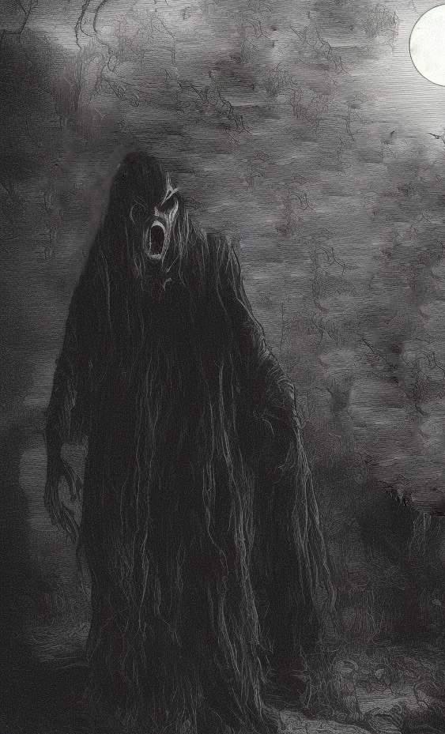

SIT: E-001-BFHB (Армия ночи)
Условия хранения: Камера категории А, которая не пропускает звук. **
Объект SIT: E-001-BFHB представляет собой человеко-подобное существо. Рост его составляет примерно 180см, но он постоянно согнут, поэтому в обычном состоянии его рост — около 170см. Вес объекта — 58кг.*
Объект был найден и изолирован [ДАТА СКРЫТА] в 20:15, после стука в дверь дома [НОМЕР СКРЫТ], в котором на тот момент проживал сотруднк SIT [ИМЯ СКРЫТО]. Так как опасности и возможности объекты были неизведаны, сотруднику пришлось соблюдать все меры предосторожности, как только он осознал, что объект аномален. Об этом ему сообщили как нездоровая поза объекта, так и его внеземные конечности. Расследование с сотрудником было проведено [ДАТА СКРЫТА], он был допрошен, после чего отпущен домой.**
Допрос сотрудника SIT:
///
((Здравствуйте.
==Здравствуйте.
((Я надеюсь, Вы понимаете, что сейчас Вы под очень большим подозрением.
==Я прекрасно это понимаю, но я выполнял свой долг.
((Вы знаете правила организации, поэтому должны понять, что я обязан Вас допросить.
==Приступайте к допросу.
((Расскажите что произошло в ночь [ДАТА СКРЫТА]. И поподробнее, пожалуйста.
==После тяжелого дня на работе, я вернулся домой. Я очень устал, ведь весь день проводил тесты над объектом SIT: M-001-BF, поэтому я лег спать. Меня разбудил стук в дверь. Четкй и уверенный, и я пошел открывать дверь. Нечто показалось на пороге. Высокое и сгорбленное, худое и нечеловечное. "Ты хочешь стать бессмертным?" — спросило оно у меня. Что-то щелкнуло тогда в моей голове...
((Что же?
==Внешний вид объекта и его голос, не сочетающийся с уверенностью стука заставили меня усомниться в его нормальности. Я отвернулся и старался не смотреть на объект. Никакого эффекта на себе я не ощущал, но все же опасался, поэтому тут же вызвал подмогу и с ее помощью изолировал объект в камеру категории X.
((Я знаю, что выбор классификации камеры был Вашей инициативой. Объясните, пожалуйста, что заставило Вас выбрать именно камеру категории X? Вы нарушили одно из правил организации. Объект не причинил Вам физического вреда, не причинил морального, никого не убил. Следуя инструкции, Вы были обязаны выбрать камеру категории D.
==Излишняя предосторожность подсказала мне выбрать именно эту камеру. Я понимаю, что ошибся, и мог принести организации огромные убытки и даже более серьезные проблемы.
((Этим выбором Вы подставили не только себя, но и своих коллег, которые присутствовали на изоляции. Идите домой, но не расслабляйтесь: расследование еще не окончено.
\\\
**Предполагаемо, первый случай встречи с данным объектом был зафксирован [ДАТА СКРЫТА], женщиной 45 лет, с которой после изоляции объекта был проведен допрос.**
Допрос свидетеля:
///
((Здравствуйте, свидетель.
==Здравствуйте.
((Пожалуйста, расскажите о происшествии с Вашим мужем.
==В ночь с 20 на 21 прошлого месяца кто-то постучал к нам в двери. Я проснулась, но пока я осознала что происходит, мой муж встал с кровати и пошел открывать дверь.
((Что случилось потом? Вы что-нибудь слышали?
==Да, кто-то низким голосом спросил у него "Вы хотите стать бессмертным?", я не услышала что ему ответил мой муж, но с тех пор его не стало. Не было ни следов, ни крови. Он будто пропал без вести.
\\\

Условия хранения: Камера категории A, которая не пропускает звук.**
Объект SIT: E-001-BFHB представляет собой аномальное существо около-человеческого вида. Рост объекта — 180см, его вес — 70кг.
Тело объекта выглядит как разорванный плащ. У объекта нет глаз, носа или ушей. Цвет кожи — бледно-белый.**
Объект стучится в жилые дома среди ночи (чаще всего, между 01:00 и 03:40), а когда ему открывают, задает хозяину один простой вопрос: "Вы хотите жить вечно?". После этого объект будет пристально смотреть в сторону субъекта. Если субъект скажет хоть слово в течение получаса после вопроса, и объект это услышит, спасения не будет. Душа субъекта поглотится объектом и предположительно навсегда станет ее частью.**
У объекта нет определенного голоса: он говорит голосами своих жертв, при этом он не говорит на каком-то определенном языке. Носители любого языка могут его понимать (Тест №3).**
Над объектом провели пять тестов, два из которых зафиксированы в этом документе:
**Тест №3:
///
((В камеру к объекту входит человек, владеющий только русским языком. За полупрозрачным стеклом за объектом наблюдает человек, владеющий только немецким языком.
))Вы хотите стать бессмертным?
((Объект смотрит в сторону испытуемого.
((Verstehst du ihn?
--Ja, das Subjekt fragte, ob das Subjekt ewig leben wolle.
((Человек, не владеющий русским языком, прекрасно понял реплику объекта.
\\\*
Во время теста №4 и теста №5 во благо науки своими жизнями пожертвовали два человека: [ИМЯ СКРЫТО], растлитель малолетних, и [ИМЯ СКРЫТО], убийца и вор.
**Тест №4:
///
((Испытуемый, пожалуйста, входите в камеру к объекту.
))Ты хочешь жить вечно?
((Испытуемый, пожалуйста, ответьте на вопрос объекта.
--Д-да...
((От испытуемого к объекту тянется волна красного цвета. Тело испытуемого исчезло.
\\\
*Для тестов №4 и 5 объект специально переместили в камеру категории D, потому что в их результате объект мог стать сильнее или обрести новые свойства.
Т.к. такого не произошло, объект вернули в камеру категории A.*
Из теста в тест голос объекта и его манера речи менялись. Во время теста №5 объект заговорил голосом испытуемого из теста №4.
**Объект SIT: E-001-BFHB был пойман и изолирован [ДАТА СКРЫТА] в 03:30 сотрудником SIT [ИМЯ СКРЫТО].
На момент задержания об объекте было мало что известно. Был зафиксирован всего один случай встречи с SIT: E-001-BFHB, но и это не было подтверждено официально.
*Сотрудник SIT был допрошен ввиду того факта, что при задержании он, вопреки правилам организации, использовал камеру категории X, хотя по всем инструкциям должен был
использовать камеру категории D. Допрос был зафиксирован.
**Допрос сотрудника SIT:
///
((Здравствуйте, допрашиваемый.
==Здравствуйте.
((Вынужден известить Вас о том, что Вы обвиняетесь в нарушении правил организации, а именно — использовании камеры категории X вместо камеры категории D. Пожалуйста, расскажите все, что произошло в ночь изоляции объекта SIT: E-001-BFHB, чтобы организация разобралась: оправданный ли был выбор камеры столь высокой категории или нет.
==Все началось со стука в дверь. Я был очень уставшим, потому что весь день допрашивал SIT: H-001.01-HB, поэтому спал крепким сном. Меня разбудили среди ночи, и я пошел открывать. На пороге стоял объект. Я помнил технику безопасности, поэтому, определив, что объект аномальный (на что мне не потребовалось больше 3 секунд), я отвернулся от него, закрыл уши и старался не издавать звуков. "Ты хочешь стать бессмертным?", — спросил он у меня. Я не ответил и тут же отправился вызывать подмогу.
((Как же Вы вызвали подмогу, если любое слово буквально бы заточило Вас в армию ночи?
==Текстовым сообщением. Я помнил рассказы [ИМЯ СКРЫТО] о пропаже ее мужа, поэтому был очень осторожен.
((Хорошо, продолжайте. Что же случилось когда приехала подмога?
==Мы заключили объект в камеру категории X.
((Чья это была инициатива?
==Моя.
((Но Вы знали, что нарушаете правила организации?
==Знал.
((Почему же не послушали своих коллег и не использовали стандартную камеру категории D?
==На обсуждение не было времени. Я запаниковал и ошибся из-за своей излишней осторожности.
((Эта излишняя осторожность будет многого стоить как Вам, так и Вашим коллегам, которые в ту ночь были с Вами на задержании. Надеюсь, Вы это понимаете.
\\\
>>>>>>> 02e33a3107c261dc0997bfef2bc6ddf08b6df176